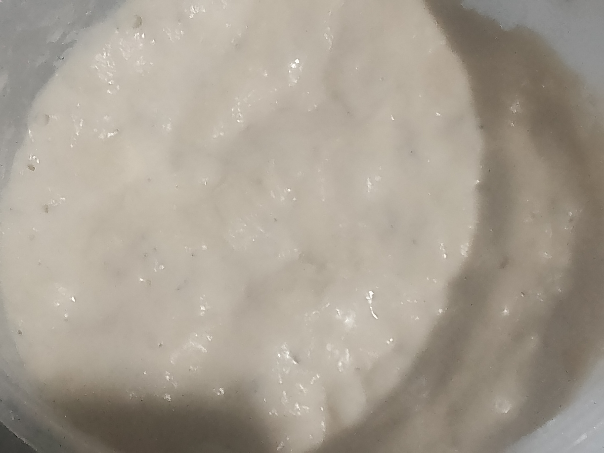
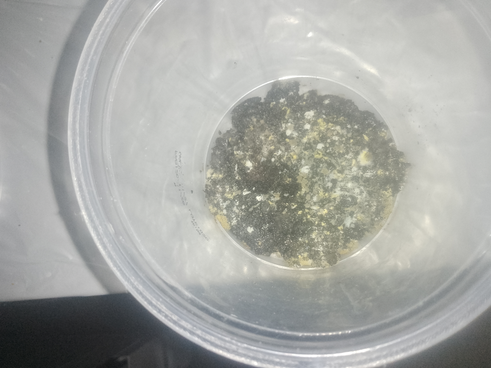
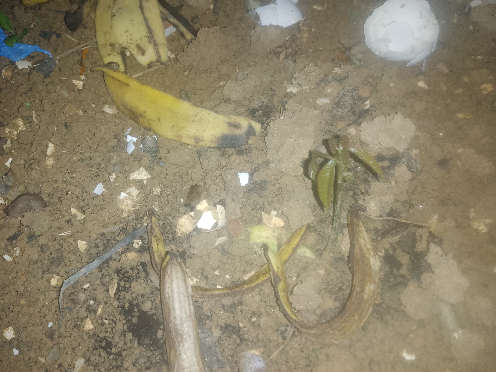
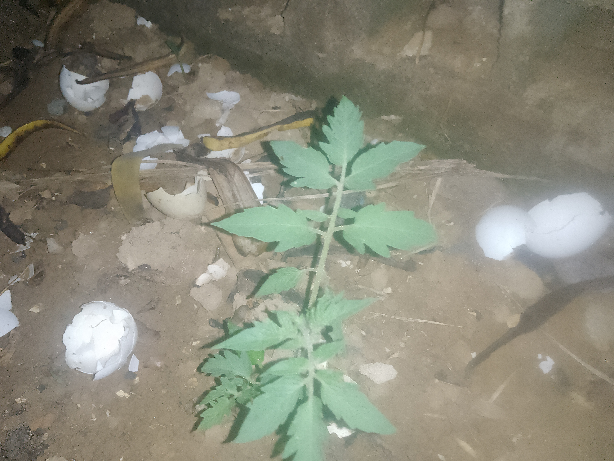
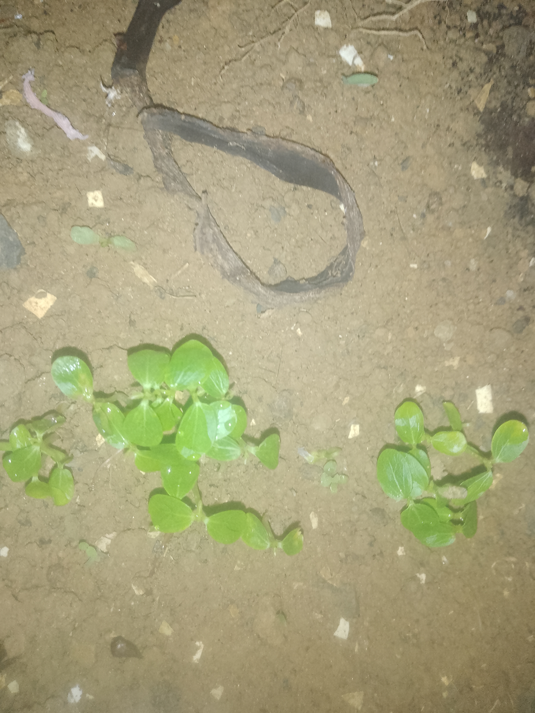

Sobre o Criador
Criador: Isllan (ou batata burra)
Descrição: Site onde eu compartilho meus experimentos para o mundo.
Meta: Fazer o site chegar em pessoas próximas.
Laboratório de Micologia

Saccharomyces (Fermento Biológico)
Sobre: Este meu fungo é o Saccharomyces, ele é o fungo responsável por fazer a massa de pão ou pizza aumentarem o famoso Fermento biológico. eu cultivo ele há dez dias e do dia 7 para cá ele está evoluindo bastante...
Como funciona?: Esse fungo faz dois processos: fermentação ou natural. O natural é o processo onde o Oxigênio circula melhor... já a Fermentação acontece quando não há oxigênio, produzindo Álcool ou CO2(O que faz a massa expandir).

Colônias de Bolores
Sobre: Esse meu bolor não é só um bolor... são vários! Existe várias colônias de bolores nesse potinho. Eu não sei quais são então não posso falar aqui para não dar informações erradas.
Como funciona?: Esses fungos são decompositores. Eles têm hifas que juntas viram Micélio. O bolor libera uma substância que transforma a comida em um caldo e se alimenta dele.
Laboratório de Botânica

Manga (Mangifera indica)
Sobre: Minha muda é forte! Usei a técnica SGS (Sistema Germinador de Sementes) que eu criei. É uma técnica complexa(nem tanto assim kk).
Como funciona?: Cientificamente é uma Drupa. Tem o Exocarpo (casca com cera), Mesocarpo (polpa com frutose) e Endocarpo (caroço fibroso). Possui Licopeno e Vitamina C(E também possui vitamina A!).

Tomate (Solanum Lycopersicum)
Sobre: Achei esse tomate nascendo em um lugar com pouco espaço e adubo. Eu o mudei e ele continuou firme!
Como funciona?: É uma fruta (baga). Tem pericarpo, placenta e loculados. Contém Licopeno que protege contra raios UV e dá a cor vermelha.

Mamão (Carica papaya)
Sobre: Mudinhas pequenas que plantei. Demorou para germinar, mas agora estão crescendo.
Como funciona?: É uma erva gigante (não tem madeira). É uma baga com Papaína, uma enzima que quebra proteínas. O leite branco (látex) é carregado dessa substância(a Papaína).